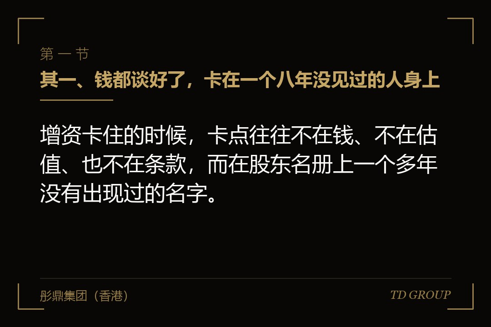
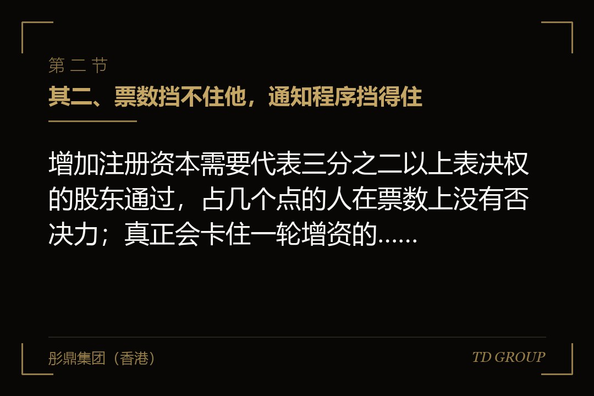
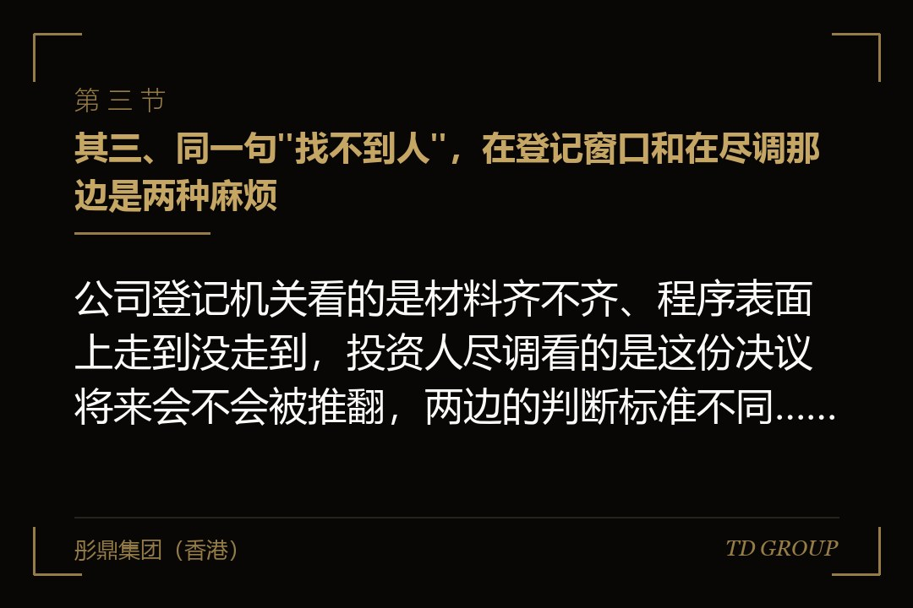

其一、钱都谈好了，卡在一个八年没见过的人身上

结论先行：增资卡住的时候，卡点往往不在钱、不在估值、也不在条款，而在股东名册上一个多年没有出现过的名字。
假设有家做制冷压缩机的公司，今年谈成了一轮增资。投资人来过三次，价格谈定，条款清单也签了。老板觉得剩下的都是流程，让财务把材料备齐就行。
材料备到一半停住了。股东名册上有四个人，第三个是八年前一位技术合伙人，占了三个点，六年前就不在公司做了。留在档案里的手机号是空号，身份证地址上的房子早就卖了，微信还在列表里但两年没回过消息。
老板起初没当回事。他的算盘是这样打的：这个人只有三个点，公司要开股东会做增资决议，他来不来都不影响票数，签不签也就那么回事。
这个算盘只对了一半。票数确实不影响，可这一轮增资要落到公司登记机关那边，要落到投资人的交割条件里，中间每一步都在问同一件事：你有没有把该通知的人通知到，有没有留下能拿出来的凭证。
两周之后，投资人的律师把这一项列进了交割前必须完成的事项。这一轮的进度从"下周签字"变成了"等公司先把这个人的事处理干净"，而处理它需要的时间，此时已经不由公司这边决定了。
其二、票数挡不住他，通知程序挡得住

结论先行：增加注册资本需要代表三分之二以上表决权的股东通过，占几个点的人在票数上没有否决力；真正会卡住一轮增资的，是他那份没有送到的会议通知。
先把表决这一层说清楚。有限责任公司增加注册资本，属于股东会的特别决议事项，通常要代表三分之二以上表决权的股东通过。表决权一般按出资比例行使，公司章程可以另有约定。一个占三个点的人，站在哪一边都不改变结果。
真正有分量的是另一项：在同等条件下，股东有权按实缴出资比例优先出这一轮增资的钱。这项权利不看谁的票多，它是每个股东各自享有的，占三个点的人和占七十个点的人，在这一项上是同一个位置。
这里有一个细节值得单独拎出来：现行规则写的是按实缴出资比例，不是按认缴出资比例。也就是说，一个当年认缴了很多、但一分钱没有实际缴进来的股东，在新一轮增资的优先权上，基础可能是零。这一点跟很多老板的直觉正好相反。
同时还有一条出口：全体股东可以约定不按出资比例优先出这笔钱。注意"全体"两个字——它要的是所有人的意思表示，而失联的那位恰恰是给不出意思表示的那个人，所以这条出口在他身上通常打不开。
会议通知也是硬的。有限责任公司召开股东会，一般应当在会议召开十五日前通知全体股东，章程另有规定或者全体股东另有约定的除外。这里的"全体股东"包括那位多年没有露面的人。
把三样并起来看，局面就清楚了：他挡不住决议，但他能让这份决议带上一道程序瑕疵。而带着瑕疵的决议，在公司内部可能一直相安无事，到了融资、并购或者上市申报的桌子上，就是一项必须解释的历史问题。
其三、同一句"找不到人"，在登记窗口和在尽调那边是两种麻烦

结论先行：公司登记机关看的是材料齐不齐、程序表面上走到没走到，投资人尽调看的是这份决议将来会不会被推翻，两边的判断标准不同，结论经常相反。
公司登记那一头做的是形式审查。窗口要的是股东会决议、修改后的章程、增资之后的出资信息这一套东西，看的是签章齐不齐、内容前后对不对得上、法定的程序有没有在纸面上完成。窗口不会去核实那位股东本人是不是真的收到了信。
所以经常出现这样一种局面：变更登记办下来了，营业执照上的注册资本也改了，公司这边觉得事情结了。投资人的律师翻到那份决议，问的却是另一个问题——这位股东的通知是怎么送的，底单在哪里。
假设有家做印染助剂的公司，走的就是这条路。增资的变更登记两周就办完了，材料一次通过。到了尽调阶段，律师把股东名册和决议摆在一起，发现有一位股东这几年从来没有在任何会议记录上签过字，于是要求公司补一份说明和一份送达凭证。
补不出来。公司当年只是往那个空号打了几通电话，没有寄过任何东西，也没有留下任何书面痕迹。这件本可以用两百块钱快递费解决的事，最后花掉了一个多月。
两边的差别，说到底是审查深度不同：一个问"这件事办完了吗"，一个问"这件事将来会不会被人推翻"。企业主习惯用前一个标准衡量自己，投资人用的一直是后一个。
顺带说一句，我们跟华尔街俱乐部有合作，在他们那边听过好几场关于交割卡壳的复盘，卡在最后一步的多数不是价格，是这类没人当回事的手续。
其四、四种"找不到"，四条路：先弄清楚他属于哪一种
结论先行：联系方式失效、人在境外、人已过世继承没办、人就在但不肯签，这四种情形被同一句"联系不上"盖住了，而它们的处理路径、耗时和成本差得很远。
头一种是联系方式失效，人其实还在。这是四种里最常见、也最省事的一种。可走的路子不少：翻当年的人事档案、老的通讯录、社保或者公积金那边留的地址、共同认识的人、他后来注册过的其他公司留下的联系方式。这一种花的是时间，不是钱。
第二种是人在境外。他本人可能很配合，问题出在文件上：由境外主体或者境外自然人签署的文件，要进公司登记的流程，通常需要办理公证与认证。现在多数国家的文件可以走附加证明书这条路，比过去的领事认证快，但仍然要排期。
所以这一种的典型误判是把"他答应了"当成"这件事完了"。从他口头答应到签好的文件寄回国内，一个月到两个月是常见的，赶上假期还要更久。这段时间是买不回来的，只能提前开始。
第三种是人已过世，继承一直没办。自然人股东去世后，其合法继承人可以继承股东资格，公司章程另有规定的除外。麻烦在于公司这边不能自己认定谁是继承人：要么继承人拿出经过公证的继承材料，要么走法院确认。
这一种最容易被低估。不少老板以为人不在了那几个点就自动没了，实际正相反——那几个点还在，只是现在对应的可能是好几位继承人，而他们彼此之间未必谈得拢。原来只要说服一个人，现在要说服一家人。
第四种最微妙：人就在，电话也通，但他不接、不回、不签。这一种经常被误报成"联系不上"，其实性质完全不同——他不是找不到，是知道公司在融资，所以不动。这时候要处理的不是联系问题，是谈判问题，而谈判要另外准备筹码和时间表。
判断他属于哪一种，方法很土但很有效：换一个他不认识的号码打过去，或者请一位跟公司无关的旧同事约他吃饭。能约出来的，是第四种；约不出来的，才是前三种。
其五、催告与公告：它能证明什么，替代不了什么
结论先行：公告解决的是"通知有没有送到"这个程序问题，它不解决"他同不同意"这个实体问题，把两件事当成一件事，是这一步最常见的误判。
先说该怎么送。通知要用能留痕的方式：书面为主，挂号信或者快递寄到最后一个已知地址和身份证地址，保留底单与投递记录。章程里如果约定了送达方式和地址，按章程走。电话和微信可以打可以发，但它们做不了凭证。
送不到的，再考虑公告。章程有约定的按章程指定的媒体，没有约定的，实务上通常是在报纸上刊登，公告期满视为送达。这一步的意义只有一个：把"公司已经尽到通知义务"这件事变成一份可以归档的证据。
公告不能做的事有三样，要记清楚。它不能替他表态，不能替他放弃按比例出钱的权利，也不能把他的持股比例变没。它证明的是公司的动作，不是他的意思。
假设有家做液压油缸的公司，走的正是这条路。公告期满之后开了股东会、做了增资决议、办完了变更登记，一切看上去很顺。两年之后那位股东回来了，说自己从来不看报纸，要求确认自己在那一轮里本可以按比例出钱的权利受到了侵害。
这件事后来的走向不重要，重要的是它暴露了一个判断错误：公司那边一直以为公告是终点，其实公告只是让流程可以往下走的一步。真正的终点，是他本人签下的那份确认——写明对那一轮增资没有异议，或者明确放弃按比例出钱。
所以公告的正确位置是备选项，不是首选项。能找到人签字的，花三个月去找也值；找不到人才走公告，而且走了公告之后，这项瑕疵仍然要在尽调的时候如实说明，不能当成已经结清。
其六、什么时候只剩司法途径这一条
结论先行：找不到人本身不是把股东除名的理由，能靠法院解决的只有几种特定情形，而每一种都有硬性的时间门槛。
先把最容易被误解的那条堵死：股东失权只管一种情形——股东认缴了出资但到期没有缴，公司书面催缴并且给了不少于六十日的宽限期，他还是不缴。走到这一步，公司可以经董事会决议向他发出失权通知，让他丧失未缴出资对应的股权。
关键在于，触发这套机制的是没有出资，不是联系不上。一位早年已经把钱缴足、只是后来失去联系的股东，不落在这个框里。有些老板听说了失权制度，就以为找不到人可以直接除名，这是把两件事接错了。
真正跟失联相关的是另一套规则。自然人下落不明满二年的，利害关系人可以向法院申请宣告他为失踪人，之后由其配偶、成年子女、父母或者其他愿意担任的人代管财产，有争议的由法院指定。财产代管人负责管理和维护他的财产权益。
这条路解决的是"有人能替他说话"，不是"他的股份没了"。有了财产代管人，通知有了送达对象，一些程序性动作可以推进，但涉及处分他的股权，仍然要在代管人的权限范围内并且符合法定条件。
再往后是宣告死亡。下落不明满四年的，利害关系人可以申请宣告死亡；因意外事件下落不明的，期间会短一些。宣告死亡之后走的是继承，回到上一节说的那条路上。
还有一条不是解决办法但必须提醒：公司这边硬来的代价很大。不通知就开会、代签、伪造送达痕迹，这些做法当时看起来省事，后果是那份决议可能被撤销甚至被认定不成立，而这项瑕疵会一直挂在公司的历史沿革里，往后每一轮融资、每一次申报都要重新解释一遍。
需要强调的是，处理这件事的立场不是把谁挤出去。公司要的是权属干净，好让这一轮的钱进得来；他要的是自己那几个点没有被悄悄稀释掉。这两件事并不冲突，多数情形下签一份确认书就同时满足了，只是没有人去签。
其七、这件事要在见投资人之前办，以及一份能自己做的清点
结论先行：处理失联股东的几条路里，有好几条的耗时是刚性的——公证认证要排期、公告有期间、宣告失踪要满二年——这些时间在尽调开始之后一天都省不下来。
为什么时点比办法要紧，有三个原因。其一，尽调一开始，这件事就从公司内部的事变成了交割条件，节奏由对方的清单决定，你只能报告进度。其二，那位股东一旦知道公司在融资，他配合的动机和条件都会变。
其三也是最硬的一条：时间。公证认证的排期不会因为你着急就提前，公告期不会因为交割在即就缩短，宣告失踪的二年更不会。融资之前处理，这些时间可以和别的准备工作并行；融资之后处理，它们就是纯粹的延期。
清点的办法很简单，今天就能做。把股东名册拉出来，对着名单上每一个人回答四个问题：这个人你三年之内联系过吗；他留在公司档案里的电话和地址是哪一年的；他手上是多少个点；他实缴过没有、缴了多少。
四个问题里只要有一个答不上来，这个人就应该进待办清单。多数公司做完这道清点会发现，名单上真正需要处理的通常只有一到两个人，而这一两个人足以让一轮融资停摆两个月。
处理的顺序也建议倒过来排：不是从持股比例最高的排起，而是从"最难找"的排起。持股高的那位通常就在公司里，随时能签；难找的那位才是决定交割时间表的人，他要排在最前面。
这件事的账其实很好算：早两年办，是一通电话加一份快递；晚两年办，就是一场带着价格的谈判。在华尔街彤鼎俱乐部的一次交流里，有位做过几轮并购的企业主把同一个意思说得更直接：能用时间解决的事，别拖到只能用钱解决的时候。
最后留一道判断题给你。假如你今天把名册拉出来，发现上面真有这么一个多年没联系的人，你会先自己给他打个电话，还是先让律师把那封挂号信寄出去？这两种开局，后面的走向差得比想象中远。